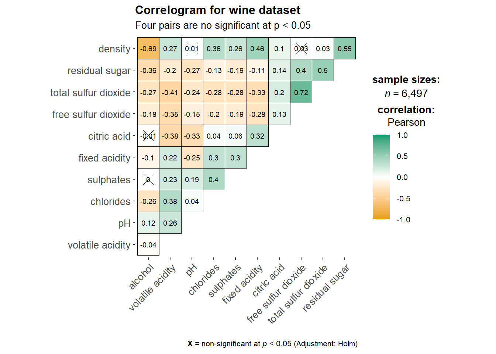
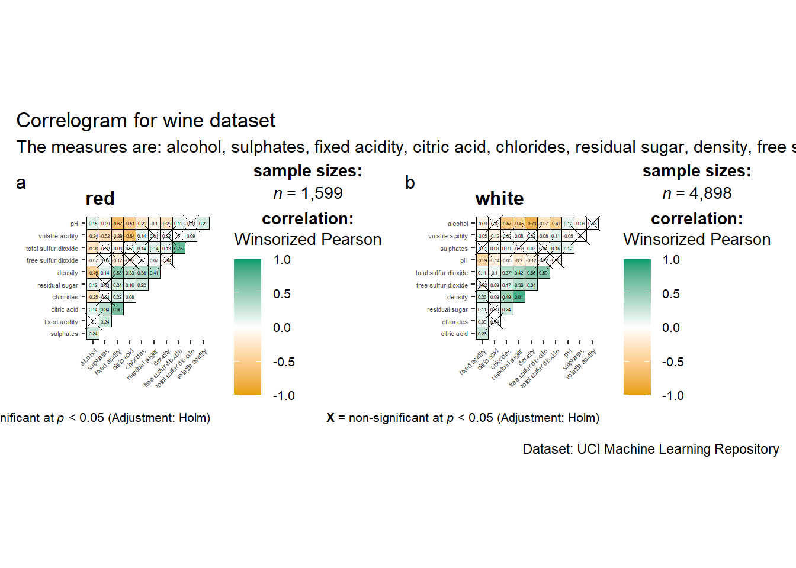
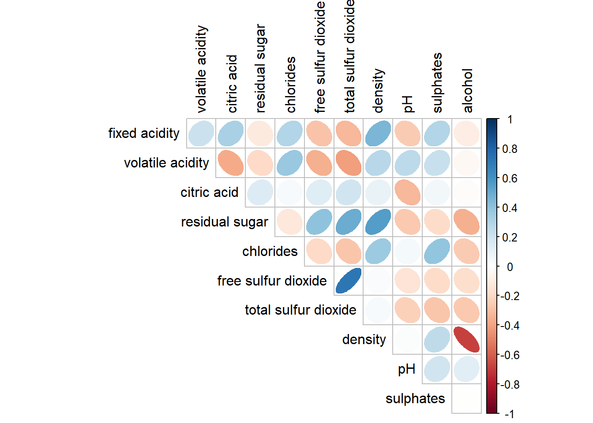
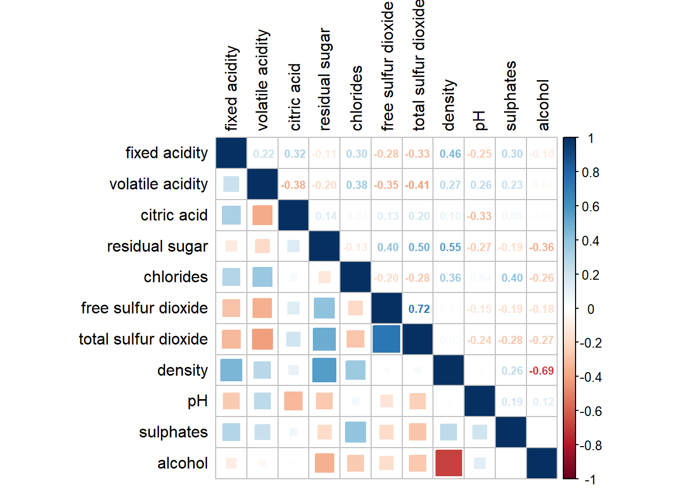
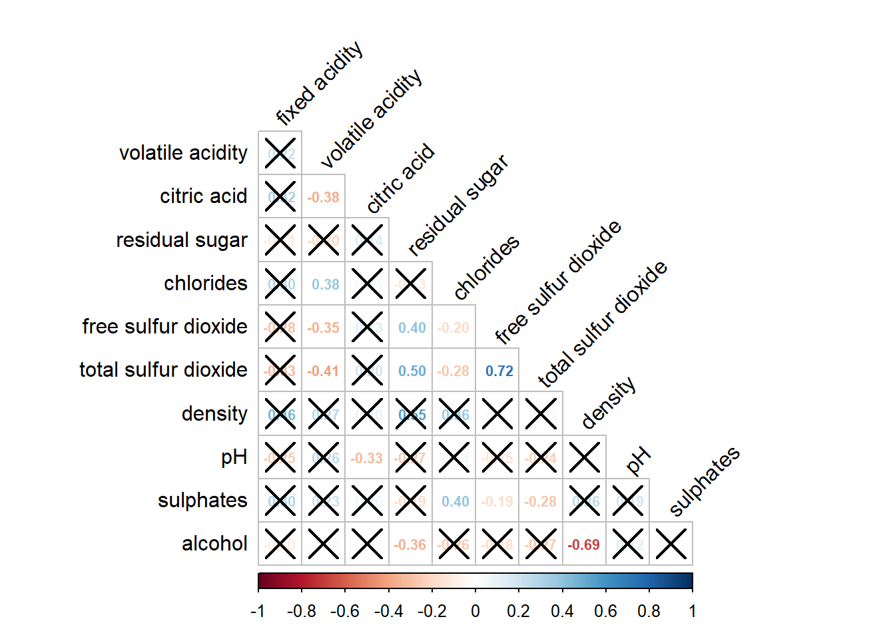
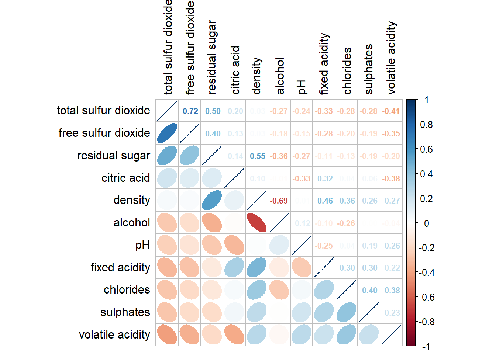

pacman::p_load(corrplot, ggstatsplot, tidyverse)Hands-on Exercise 5b: Visual Correlation Analysis
1 Getting Started
In this exercise, we will use corrplot, ggpubr, plotly and tidyverse in RStudio.
The code chunk below uses p_load() of pacman package to check if these packages are installed in the computer and load them onto your working R environment.
The code chunk below imports the data into R environment by using read_csv() function of readr package.
wine <- read_csv("data/wine_quality.csv")2 Building Correlation Matrix: pairs() method
In this section you will learn how to create a scatterplot matrix by using the pairs function of R Graphics.
2.1 Building a basic correlation matrix
Figure below shows the scatter plot matrix of Wine Quality Data. It is a 11 by 11 matrix.
pairs(wine[,1:11])
The required input of pairs() can be a matrix or data frame. The code chunk used to create the scatterplot matrix is relatively simple. It uses the default pairs function. Columns 2 to 12 of wine dataframe is used to build the scatterplot matrix. The variables are: fixed acidity, volatile acidity, citric acid, residual sugar, chlorides, free sulfur dioxide, total sulfur dioxide, density, pH, sulphates and alcohol.
pairs(wine[,2:12])
2.2 Drawing the lower corner
The upper.panel argument will be used to show the lower half of the correlation matrix.
pairs(wine[,2:12], upper.panel = NULL)
The lower.panel argument will be used to show the upper half of the correlation matrix.
pairs(wine[,2:12], lower.panel = NULL)
2.3 Including with correlation coefficients
panel.cor function will be used to show the correlation coefficient of each pair of variables instead of a scatter plot.
panel.cor <- function(x, y, digits=2, prefix="", cex.cor, ...) {
usr <- par("usr")
on.exit(par(usr))
par(usr = c(0, 1, 0, 1))
r <- abs(cor(x, y, use="complete.obs"))
txt <- format(c(r, 0.123456789), digits=digits)[1]
txt <- paste(prefix, txt, sep="")
if(missing(cex.cor)) cex.cor <- 0.8/strwidth(txt)
text(0.5, 0.5, txt, cex = cex.cor * (1 + r) / 2)
}
pairs(wine[,2:12],
upper.panel = panel.cor)
3 Visualizing Correlation Matrix: ggcormat()
There are at least three R packages provide function to plot corrgram which are:
On top that, some R package like ggstatsplot package also provides functions for building corrgram.
In this section, you will learn how to visualizing correlation matrix by using ggcorrmat() of ggstatsplot package.
3.1 The basic plot
One of the advantage of using ggcorrmat() over many other methods to visualize a correlation matrix is it is ability to provide a comprehensive and yet professional statistical report as shown in the figure below.
ggstatsplot::ggcorrmat(
data = wine,
cor.vars = 1:11)
ggstatsplot::ggcorrmat(data = wine,
cor.vars = 1:11,
ggcorrplot.args = list(outline.color = "black",
hc.order = TRUE,
tl.cex = 10,
lab_size = 2.5),
title = "Correlogram for wine dataset",
subtitle = "Four pairs are no significant at p < 0.05")
Things to learn from the code chunk above
cor.varsargument is used to compute the correlation matrix needed to build the corrgram.ggcorrplot.argsargument provide additional (mostly aesthetic) arguments that will be passed toggcorrplot::ggcorrplotfunction. The list should avoid any of the following arguments since they are already internally being used:corr,method,p.mat,sig.level,ggtheme,colors,lab,pch,legend.title,digits.
The sample sub-code chunk can be used to control specific component of the plot such as the font size of the x-axis, y-axis, and the statistical report.
ggplot.component = list(
theme(text=element_text(size=5),
axis.text.x = element_text(size = 8),
axis.text.y = element_text(size = 8)))4 Building multiple plots
grouped_ggcorrmat(
data = wine,
cor.vars = 1:11,
grouping.var = type,
type = "robust",
p.adjust.method = "holm",
plotgrid.args = list(ncol = 2),
ggcorrplot.args = list(outline.color = "black",
hc.order = TRUE,
tl.cex = 4,
tl.srt = 45,
lab_size = 1),
annotation.args = list(tag_levels = "a",
title = "Correlogram for wine dataset",
subtitle = "The measures are: alcohol, sulphates, fixed acidity, citric acid, chlorides, residual sugar, density, free sulfur dioxide and volatile acidity",
caption = "Dataset: UCI Machine Learning Repository"))
Things to learn from the code chunk above:
To build a facet plot, the only argument needed is
grouping.var.Behind group_ggcorrmat(), patchwork package is used to create the multiplot.
plotgrid.argsargument provides a list of additional arguments passed to patchwork::wrap_plots, except for guides argument which is already separately specified earlier.Likewise,
annotation.argsargument is calling plot annotation arguments of patchwork package.
5 Visualizing Correlation Matrix using corrplot Package
5.1 Getting started with corrplot
In the code chunk below, cor() of R Stats is used to compute the correlation matrix of wine data frame.
wine.cor <- cor(wine[, 1:11])Next,corrplot() is used to plot the corrgram by using all the default setting as shown in the code chunk below.
corrplot(wine.cor)
5.2 Working with visual geometrics
There are seven visual geometrics geometrics to encode the attribute values which are circle, square, ellipse, number, shade, color and pie. The default is circle. However, this default setting can be changed by using the method argument as shown in the code chunk below.
corrplot(wine.cor,
method = "square") 
5.3 Working with layout
There are three layout types which EW “full”, “upper” and “lower”. The default is “full”. However, this default setting can be changed by using the type argument. Furthermore, arguments diag and tl.col are used to turn off the diagonal cells and to change the axis text label color to black color respectively as shown in below.
corrplot(wine.cor,
method = "ellipse",
type="upper",
diag = FALSE,
tl.col = "black")
5.4 Working with mixed layout
Thecorrplot.mixed(), a wrapped function for mixed visualization style, uses to create a corrgram with mixed layout.
corrplot.mixed(wine.cor,
lower = "square",
upper = "number",
tl.pos = "lt",
diag = "l",
tl.col = "black",
number.cex = 0.7)
5.5 Combining corrgram with the significant test
In this section, we will show a corrgram combined with the significant test. The corrgram reveals that not all correlation pairs are statistically significant. For example, the correlation between total sulfur dioxide and free surfur dioxide is statistically significant at significant level of 0.1 but not the pair between total sulfur dioxide and citric acid.
The cor.mtest() is used to compute the p-values and confidence interval for each pair of variables. Then,the p.mat argument of corrplot function is used as in the code chunk below.
wine.sig = cor.mtest(wine.cor, conf.level= .95)
corrplot(wine.cor,
method = "number",
type = "lower",
diag = FALSE,
tl.col = "black",
tl.srt = 45,
p.mat = wine.sig$p,
sig.level = .05,
number.cex = 0.7)
5.6 Reorder a corrgram
Currently, corrplot package support four sorting methods, they are:
“AOE” is for the angular order of the eigenvectors. See Michael Friendly (2002) for details.
“FPC” for the first principal component order.
“hclust” for hierarchical clustering order, and “hclust.method” for the agglomeration method to be used.
- “hclust.method” should be one of “ward”, “single”, “complete”, “average”, “mcquitty”, “median” or “centroid”.
“alphabet” for alphabetical order.
“AOE”, “FPC”, “hclust”, “alphabet”. More algorithms can be found in seriation package.
Code
corrplot.mixed(wine.cor,
lower = "ellipse",
upper = "number",
tl.pos = "lt",
diag = "l",
order= "FPC",
tl.col = "black",
number.cex = 0.7)
5.7 Reordering a correlation matrix using hclust
corrplot() can draw rectangles around the corrgram based on the results of hierarchical clustering by using hclust
Code
corrplot(wine.cor,
method = "ellipse",
tl.pos = "lt",
tl.col = "black",
order="hclust",
hclust.method = "ward.D",
addrect = 3)